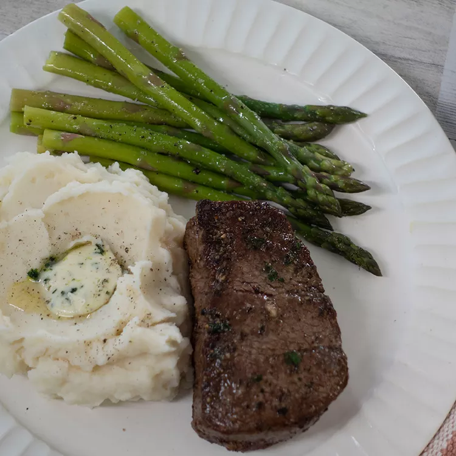

Try this recipe to cook the perfect filet mignon complete with a quick mushroom pan sauce. This elegant filet mignon recipe, complete with a creamy mushroom pan sauce, is the perfect choice for any special occasion.
Filet mignon is a prized cut of beef that comes from the short loin, which is found inside the cow's rib cage. Since this muscle is not toughened by exercise, the meat itself is very tender.
You'll find a detailed ingredient list and step-by-step instructions in the recipe below, but let's go over the basics:
This filet mignon is simply seasoned with just salt and pepper to allow the meat's natural flavor to shine. Plus, you'll serve the filets with a luxurious mushroom pan sauce — so there certainly won't be a lack of flavor in this dish.
"This [filet mignon] is the perfect meal if you're looking for something a little bit special," says culinary producer and recipe creator Nicole McLaughlin (a.k.a. NicoleMcMom). Here are a few of her best tips:
Cook the filets on the stove for 2-3 minutes on each side. Transfer them to an oven (preheated to 425 degrees F) where they'll continue to cook for three to eight minutes, depending on the desired doneness.
If you're in need of a little serving inspiration, explore our collection of 20 Best Side Dishes for Steak. Here are a few of the delicious recipes you'll find:
If you have leftover filet mignon, let it cool completely before storing. Wrap the leftovers in foil or place them in a shallow, airtight container. Store in the refrigerator for up to three days.
Avoid reheating filet mignon in the microwave, as microwaved steak tends to be rubbery. Instead, reheat the leftover filet in an oven preheated to 275 degrees F for 20-30 minutes or until the meat is heated through.
Steak:
Mushroom Pan Sauce:
Allow steaks to sit at room temperature 30 minutes before cooking.
Preheat the oven to 425 degrees F (220 degrees C).
Heat oil in a large oven-proof skillet over high heat. Season one side of steaks liberally with salt and pepper in an even layer. Place filets seasoned side down into the skillet and cook, undisturbed until a rich golden brown crust has formed, about 3 minutes. Season the other side with salt and pepper and flip the steaks. Cook 2 minutes longer and then move the skillet to the preheated oven.
Cook in the preheated oven 2 to 3 minutes longer for rare, about 4 minutes for medium-rare, 5 to 7 minutes for medium, about 8 minutes for medium well and 1 to 2 more minutes for well done.
Remove steaks from the skillet. Add butter if desired and tent with foil. Allow steak to rest for 10 minutes before serving.
Meanwhile, return skillet to the stovetop over medium-high heat and melt 2 tablespoons butter in the drippings. Add mushrooms and cook, stirring often, until browned, about 5 minutes. Pour in wine to deglaze skillet and scrape the bottom with a wooden spoon to loosen any browned bits.
Cook until the liquid is mostly evaporated. Stir in cream, Worcestershire sauce, and pepper and bring mixture to a simmer, stirring often. Reduce heat to medium-low and cook until slightly thickened, about 2 minutes. Season with more salt if desired. Stir in lemon juice and serve mushroom sauce with filet mignon.
